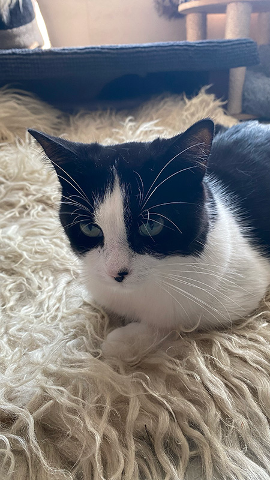

Luna
Ras: Europese Korthaar
Leeftijd: 8 jaar
Likes: Zonnestralen en dekentjes
Dislikes: Stofzuigers
Persoonlijkheid: Lief en eigenwijs
Bijzonder: Wit vlekje op haar neus

Prrrrr... Welkom op de Poezenpagina! Hier vind je onze lieve, pluizige kapiteintjes die wachten op hun furr-ever thuis. Elke kat aan boord van de Poezenboot heeft zijn eigen unieke karakter en verhaal, en misschien ontmoet jij hier wel jouw nieuwe beste maatje. Neem snel een kijkje en laat je hart smelten. Wie weet springt er zo een nieuwe huisgenoot in je armen!
Ras: Europese Korthaar
Leeftijd: 8 jaar
Likes: Zonnestralen en dekentjes
Dislikes: Stofzuigers
Persoonlijkheid: Lief en eigenwijs
Bijzonder: Wit vlekje op haar neus

Ras: Europese Korthaar
Leeftijd: 8 jaar
Likes: Zonnestralen en dekentjes
Dislikes: Stofzuigers
Persoonlijkheid: Lief en eigenwijs
Bijzonder: Wit vlekje op haar neus
Ras: Europese Korthaar
Leeftijd: 3 jaar
Likes: Touwtjes en veertjes
Dislikes: Drukke geluiden
Persoonlijkheid: Speels en ondeugend
Bijzonder: Heeft een klein hartvormig vlekje op haar buik
Ras: Grijs-wit gevlekt
Leeftijd: 5 jaar
Likes: Zonnestralen en zachte kussens
Dislikes: Slippers (vooral als ze bewegen!)
Persoonlijkheid: Rustig en vriendelijk
Bijzonder: Kijkt je altijd aan met een kleine glimlach